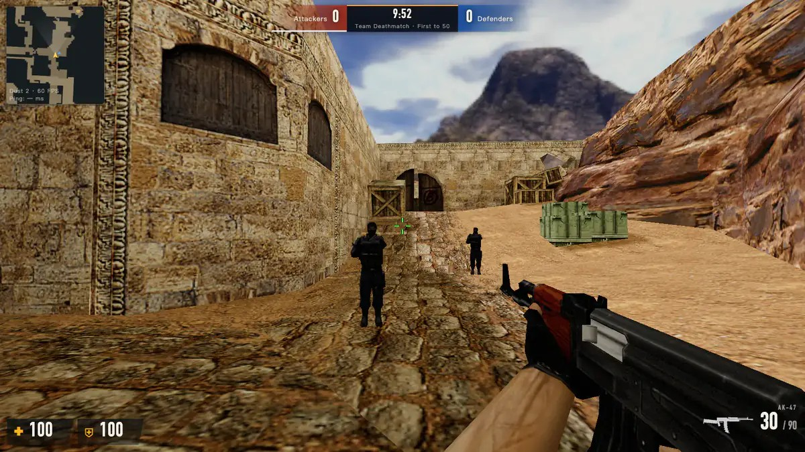
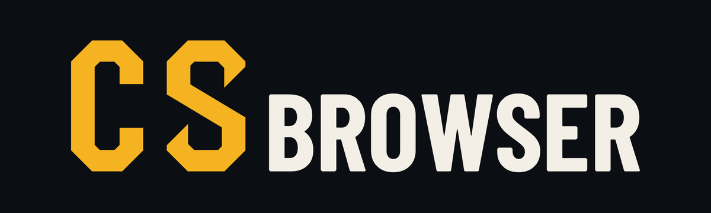

用 AI 做出一个产品，按下发布键。第二天打开后台，第一批用户从哪来？
Albert 做了一款叫 CSBrowser 的联机游戏。没买广告，上线后的首个约 19 天，GA4 记下了 14,777 次会话。最大的流量来源是自然搜索。
有人搜到，有人点开。接下来，游戏要怎么让他们回来打第二局？等真有了回头客，又能靠什么赚钱？

第一批访问，从搜索框里来
CSBrowser 在 10 月 2 日公开上线。它解决的是一件小事：朋友想开黑，有人用电脑，有人只有手机。把房间链接发出去，大家打开浏览器就能进同一局，免装客户端，也免注册。
14,777 次会话
12,308 个用户标识
项目方 GA4 数据 · 上线后首个约 19 天统计窗口
这个产品的获客逻辑，可以从一个场景看懂：有人想找个能直接玩的网页游戏，搜到 CSBrowser，点开就能试。接下来值得追的数字，是有多少人真的进了房间、打完了第一局。

CSBrowser 实机画面 · 项目官网
让人打完第一局，再给个理由回来
Albert 接下来想试两件事。主播联动解决的是谁来拉人开第一局。主播把链接往直播间一发，观众就有机会从看比赛变成和主播同局。
排位赛则用来验证回访。如果有人打完一局，还想约队友一起冲下一个段位，游戏就有机会从「搜到顺手玩一次」变成「下次还约这儿」。
这款游戏，打算靠什么赚钱？
Albert 先看两类人愿不愿意买单。玩家会为外观和赛季内容付费吗？他给自己定的原则是「只卖外观，不卖数值」。如果比赛能聚起一批稳定参与的人，品牌会愿意赞助吗？
这些收入来源都还在探索。先把回访跑出来，才知道该优先做什么付费内容、哪种活动有机会拉到赞助。
成本也要算。Albert 统筹多个 AI 编码代理，约一个月做出联机、邀请和录像的主体功能。游戏托管在 Cloudflare，有人需要时才开房。对一个人运营的产品来说，开发和房间成本都关系到这门生意能不能做下去。
Albert
CSBrowser 创始人 · 10 年以上 Web 全栈开发经验

11 月 17 日，带一个生意问题来
这次匠人学院一人创业营（OPC）项目 Pitch，Albert 会带着已经上线的 CSBrowser，讲产品怎么做出来、最早的访问从哪来，以及他下一步想验证什么。
如果你也有个用 AI 做出来的产品，可以在问答时直接问：预算只够试一件事，你会先做搜索、找主播，还是先问玩家愿意为什么付钱？
一人创业营（OPC）项目 Pitch 专场
CSBrowser · Albert
2026 年 11 月 17 日（周二）
北京时间 17:00–18:00
悉尼时间 20:00–21:00
免费线上活动
微信长按识别二维码，进入活动报名页